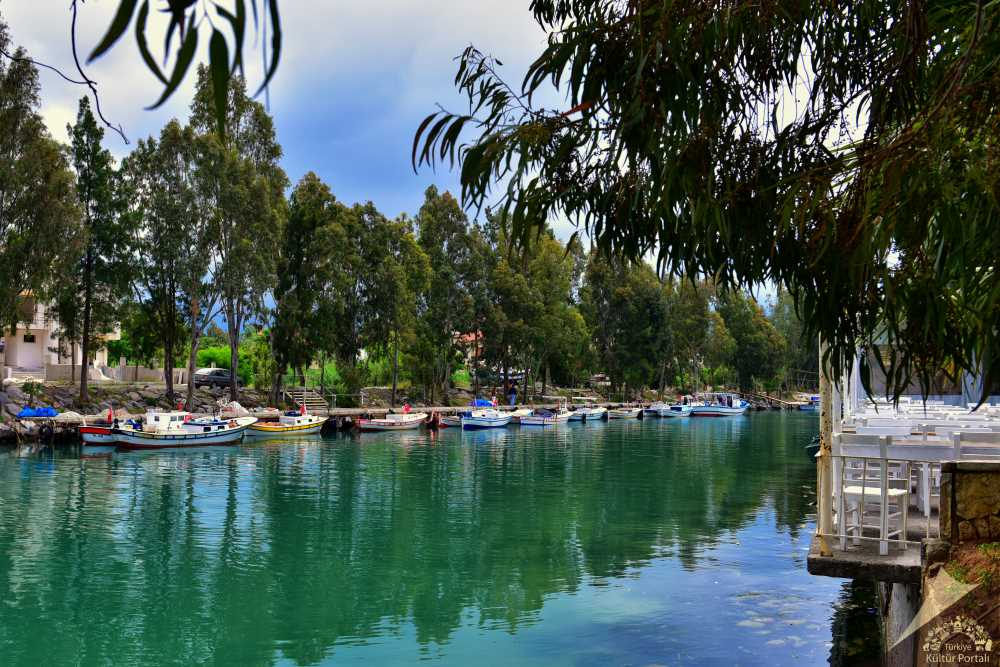
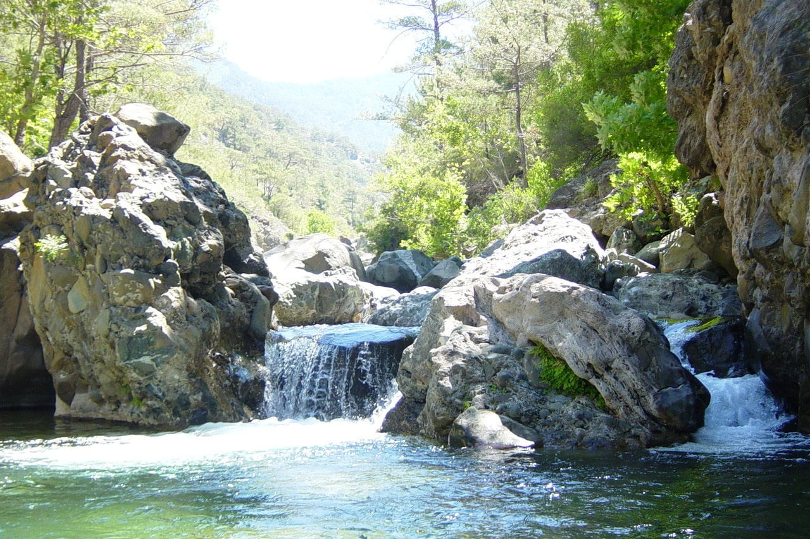
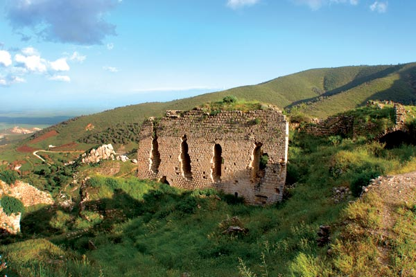
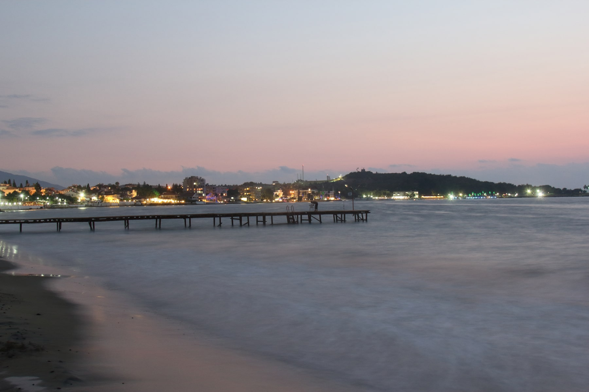

Arsuz,
Hatay ilinin bir ilçesidir. Amanos Dağları ve Akdeniz kıyısı arasında yer almaktadır. 2020 yılı itibarıyla 97.217 kişilik nüfusa sahiptir. Uluçınar ile Gökmeydan mahallelerinden oluşan ilçe merkezine tamamı dağlık ve kırsal kesimlerde bulunan 25 köy bağlıdır. İlçenin ekonomik durumu tarım, hayvancılık, turizm ve balıkçılığa dayanmaktadır. Arsuz, yüzölçümü bakımından Hatay'ın 4. büyük ilçesidir.
Tarihçe

Arsuz ilçesi, tarihi boyunca; Rhosus, Rhopolis, Port Panel, Kabev, Arsous ve bugünkü adı olan Arsuz isimlerini almıştır. Arsuz'da ilk yerleşim çok eskilere dayanmaktadır. Ancak bilinen tarihi Selevkoslarla başlamaktadır. Arsuz, M.Ö. 300 yıllarında Makedonya Kralı Büyük İskender'in generallerinden Selevkos I. Nikator'un, M.Ö. 64 yılında Roma'nın, M.S. 638 yılında Arapların, M.S. 969 yılında Bizans'lıların ve 1268 yılında ise Memlüklüler'in egemenliği altına girmiştir. Arsuz, Bizans ve Roma dönemlerinde çok önemli bir liman ve yerleşim yeri konumundaydı. Bu dönemlere ait tarihi bir bölümü günümüzde mevcut olup, askeri bölge içerisinde bulunmaktadır.[5] 30 Aralık 1994 tarihinde Uluçınar ve Arpaçiftlik köylerinin birleştirilmesiyle belediye statüsü alarak beldeye dönüştü.[6] Arsuz, 12 Kasım 2012'de 6360 sayılı kanun ile İskenderun'a bağlı bir belde iken ilçe oldu.[7]
Coğrafya

Arsuz ilçesinin yüzölçümü 462 km²'dir.[8] Arsuz, Hatay il merkezine 87 kilometre uzaklıktadır. İlçe topraklarının kuzeyinde İskenderun, kuzeydoğusunda Belen, doğusunda Amanos dağları, güneyinde Samandağ ve batısında Akdeniz bulunur. Hatay'ın kıyı şeridinin yaklaşık %20'si Arsuz ilçe sınırları içerisindedir. Ayrıca Arsuz 462 km²'lik yüzölçümüyle Hatay yüzölçümünün %8,4'ünü oluşturur. Arsuz ilçe toprakları genelde düz alanlarla kaplıdır. Amanos Dağları'na yakın kesimlerinde yüksek tepeler, vadiler ve platolar bulunmaktadır. İlçenin rakımı 3 metredir. Arsuz ilçe merkezi, Uluçınar ve Gökmeydan mahalleleri olmak üzere 2 mahalleden oluşmaktadır ve Akdeniz kıyısında düz bir alanda kurulmuştur. İlçenin en önemli akarsuları Zilli ve Arsuz çaylarıdır.
Nüfus
2020 yılı nüfus sayımı sonuçlarına göre Arsuz'un nüfusu 97.217'dir.
Tarihî yerler
Arsuz ilçe merkezinde bulunan dünyanın en eski kiliselerinden biri kabul edilen Maryo Hanna Kilisesi ve Arsuz'a bağlı Hacıahmetli köyü yakınlarında Meryem Ana'nın banyo yaptığı yer olduğu iddia edilen Meryem Ana Havuzu bulunmaktadır.[12]
Arsuz Kalesi

Arsuz ilçesinin 30 km kadar güneyinde bulunan Kale köyünde Selçuklular zamanında yapıldığı tahmin edilen bir kale bulunmaktadır. Kale denize paralel olarak yüksekliği 10 metre olan bir tepe üzerinde inşa edilmiştir. Kalenin hangi tarihte yapıldığına dair bilgi yoktur. Ancak köyün adından da anlaşıldığı gibi eski zamanlarda bu köyde bir kalenin olduğu bilinmektedir. Kalenin adının ise Arsuz Kalesi olduğu tahmin edilmektedir. Kale denizden gelebilecek saldırılara karşı büyük bir beton duvarla üstü kapatılmıştır. Günümüzde kalenin bulunduğu yer yıkılmış ve yok olmuş durumdadır. Ancak kalenin kalıntılarını görmek mümkündür.
Ulaşım
Arsuz ilçe merkezinden bağlı mahalle ve köylere ulaşım minibüs ve dolmuşlarla sağlanmaktadır. İlçe merkezinden köylere dolmuş ve minibüs bulmak mümkündür. Arsuz ilçesine ulaşım karayolu ile sağlanmaktadır. İskenderun - Arsuz ilçe yolu 37 km'dir.[13] Hatay - Arsuz otoyolu ise 87 km'dir.[14] Arsuz'un 10 km güneyinde Konacık köyünde bir balıkçı barınağı bulunmaktadır.
Coğrafi konum
Arsuz ilçesi, coğrafi konum ve yüzölçümü bakımından Hatay'ın 4.büyük ilçesi konumunda bulunmaktadır. Arsuz, 462 km² alana sahiptir. İlçe merkezinin ortalama rakımı 3 metre civarındadır. Dağlık kesimlerinde en yüksek rakımı ise 1.700 metrenin üzerindedir. Arsuz ilçe topraklarının doğusunda Amanos dağları, batısında Akdeniz ve ortasında Arsuz ovası bulunur. Ayrıca Arsuz; kuzeyde İskenderun, kuzeydoğuda Belen, doğuda Antakya ve güneyde Samandağ ilçeleriyle komşudur. Aşağıkepirce köyünden başlayan Arsuz ilçesinin sınırı sahil şeridine takiben Kale köyüne kadar uzanır. İlçe topraklarının sonlandığı noktanın karşısında Samandağ ilçesinin Keldağı vardır. Arsuz ilçesinin 40 kilometre uzunluğunda kıyı şeridi bulunmaktadır.[15] Bu bakımdan Hatay'ın en uzun kıyı şeridine sahip 2.ilçesi konumundadır.
Dağ ve tepeler

Arsuz ilçe topraklarının %50,5'ini dağlar, %45,7'sini ovalar ve %5,3'ünü platolar oluşturur. İlçe topraklarının doğu-güney hattında Amanos Dağları yer almaktadır. Arsuz ilçe sınırları içerisinde kalan en yüksek nokta 1.755 metre ile Daz tepedir. İlçe sınırları içinde kalan bir diğer önemli nokta ise Arsuz - Belen ilçe sınırında bulunan Çobandede tepesidir. Bu tepenin en yüksek rakımı 1.722 metre civarındadır.[16]
Jeolojik yapı
Arsuz ilçe topraklarının ana çatısını Amanos Dağları ve Arsuz düzlüğü oluşturur. Bu dağ sırası ile ovanın jeolojik yapısını peridotit ve serpantin gibi gabro yeşil kütleler oluşturmaktadır.
Bitki örtüsü
Arsuz ilçesinin doğal bitki örtüsünü makiler ve ormanlar oluşturur. Amanos Dağları'nın denize bakan kesimlerinde makilik alanlarda 800 metreden 1200 metreye dek ardıç gibi ibreli ağaçlarla meşe, kayın, kızılcık, kavak ve çınar gibi yapraklı ağaçları bulunmaktadır. 1200 metrenin üzerinde ibreli ağaçlardan kızılçam, karaçam, sedir ve yer yer ardıçlardan oluşan geniş ormanlar bulunur.
Akarsular
Arsuz ilçesinin en önemli akarsuları; Zilli, Hacıahmetli, Arsuz, Avcılarsuyu, Hüyük ve Konacık çaylarıdır. Dağlardan kaynaklanan sular küçük dereler halinde denize dökülmektedir.
Baraj ve göller
Arsuz ilçe sınırları dahilinde Madenli köyü mevkiinde bulunan Zilli çayı üzerinde Arsuz Gönen Barajı[17] ve Konacık köyü yakınlarında ise Arabın gölü kanyonu bulunmaktadır.[18]
Yeraltı zenginlikleri
Arsuz ilçesinde asbest varlığı bulunmaktadır. Asbestin toplam rezervi 3 milyon 523 bin 300 tondur.[19]
Enerji ve tabii kaynaklar
Arsuz'un Kale Köyünde 1320 MW'lık Güney Akdeniz Entegre Termik Santrali[20] yapılacaktır. Arsuz ilçesi Rüzgâr, Güneş, Hidroelektrik ve Jeotermal gibi yenilenebilir enerji kaynaklarının kullanılmasında çok verimli ve uygun bir coğrafi bölgede bulunmaktadır. Arsuz çok rüzgârlı ve çok güneş alan bir yerleşim yeridir, bu açıdan tabii kaynakları oldukça verimlidir.
İklim
Arsuz ilçesinde Akdeniz iklimi görülmektedir. Yazları sıcak ve kurak, kışları soğuk ve yağışlı geçmektedir. Temmuz ayı 8 mm yağışla yılın en kurak ayıdır. Ocak ayı 152 mm yağışla yılın en fazla yağış alan ayıdır. Ağustos ayı 34,7 °C ile yılın en sıcak ayıdır. Ocak ayı 10,3 °C ile yılın en soğuk ayıdır. Yılın en kurak ve en yağışlı ayı arasındaki yağış miktarı 144 mm'dir. Yıl boyunca ortalama sıcaklık 17,4 °C civarında seyretmektedir.[21]
Ekonomi
Arsuz ilçesinin ekonomisi turizm, tarım ve hayvancılığa dayalıdır. Başlıca tarımsal faaliyetler arpa ve buğday gibi tahıl ürünleri yetiştiriciliği ağırlıklı olmak üzere, patates, soğan, patlıcan, domates, biber, maydanoz, ıspanak, mısır, kayısı, pamuk, üzüm, portakal, limon, muz, yer fıstığı ve zeytin en çok yetiştirilen sebze ve meyve tarımından oluşmaktadır. Ayrıca köylerde ve yaylalarda besicilik yoluyla hayvancılık ile arıcılık yapılmaktadır. Arsuz'un birçok köyünde büyük baş ve küçük baş hayvancılık yapılmaktadır. Kıyı kesimlerinde küçük çapta balıkçılık'ta yapılmaktadır. Arsuz ilçe topraklarının %50,4'ü tarım arazisidir. İlçede; Arsuz İlçe Gıda, Tarım ve Hayvancılık Müdürlüğü,[22] 1864 Sayılı Arsuz Tarım Kredi Kooperatifi[23] ve T.C. Ziraat Bankası Arsuz Şubesi[24] tarafından çiftçilere tarım ve hayvancılık alanında destek verilmektedir.
Altyapı bilgileri
Arsuz ilçe merkezi ve mahallelerinde elektrik, su, telefon ve kanalizasyon şebekesi mevcuttur. Ancak köylerde elektrik ve su hattı vardır, Fakat telefon ve kanalizasyon şebekesi yoktur. İlçede; Arsuz Ptt Merkez Müdürlüğü,[25] Tedaş Arsuz İlçe İşletme Şefliği[26] ve Hatsu Arsuz İlçe İşletme Şefliği bulunmaktadır.[27]
Eğitim
2015 yılı verilerine göre İlçede; Arsuz Halk Eğitim Merkezi, 4 Anaokulu, 9 Lise, Mesleki ve Teknik Lisesi, 77 İlk ve Ortaokulu, 5 Rehberlik ve Araştırma Merkezi ve özel Eğitim ve Rehabilitasyon Merkezi ile 3 Sürücü Kursu bulunmaktadır.[28]
Sağlık
Arsuz ilçesinde; Özel Medica Arsuz Tıp Merkezi[29] Arsuz Toplum Sağlığı Merkezi, Arsuz 1.Nolu 112 Acil Sağlık Hizmetleri İstasyonu, 2 Sağlık Kabini, 13 Aile Sağlığı Merkezi, 17 Aile Hekimliği Birimi ve 27 eczane bulunmaktadır.[30]
Asayiş ve güvenlik
Arsuz ilçesinin asayiş ve güvenliği, Arsuz İlçe Emniyet Müdürlüğü[31] ve Arsuz İlçe Jandarma Komutanlığı[32] birimleri tarafından sağlanmaktadır. İlçe Emniyet Müdürlüğü'ne bağlı Arsuz Polis Merkezi Amirliği ile Mobese Komuta Merkezi bulunmaktadır.
Yerel yönetim
Şu an Kaymakamlık görevini Musa Sarı yürütmektedir. 2019 Türkiye yerel seçimleri sonucunda Asaf Güven Arsuz Belediye Başkanlığı görevini yürütmektedir.
İdari yapı
2012 yılında TBMM'de kabul edilen 6360 sayılı kanunla Arsuz ilçesi kurulmuştur.[33] Belde belediyeleri kapatılarak mahalleye dönüştürülmüştür. Arsuz, 8 mahalle ve 17 köyden oluşmaktadır.[34]
Mahalleler
Uluçınar (Merkez), Gökmeydan (Merkez), Arpaçiftlik, Çetillik, Gözcüler, Akçalı, Üçgüllük, Madenli, Karaağaç
Köyler
Aşağıkepirce, Yukarıkepirce, Derekuyu, Kurtbağı, Gülcihan, Beyköy, Karagöz, Hacıahmetli, Arpagedik, Hüyük, Avcılarsuyu, Haymaseki, Tülek, Konacık, Işıklı, Tatarlı, Kale
Belediye
Arsuz'da belediye teşkilatı ilk kez 1995 yılında kurulmuştur. Uluçınar (Arsuz) 1987 yılında bucak merkezi olurken, 1995 yılında Arsuz belde belediyesi kurulmuş ve 2014 yılında Arsuz ilçe belediyesi olmuştur.
217351015
Iskenderun Teknik Universitesi